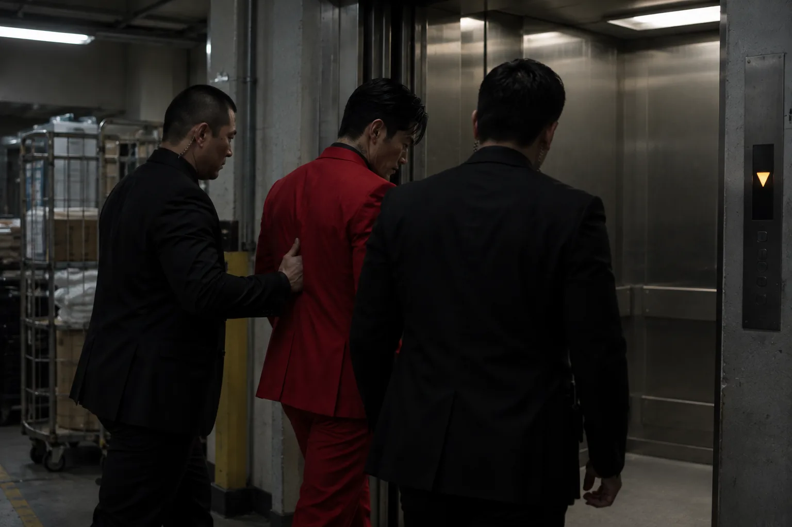

TOP
FACILITIES
GALLERY
探索リセット
この記録は現在閲覧できません。
公開中のホテル情報をご確認ください。
トップへ戻る
INTERNAL MONITORING ARCHIVE / B2
地下増設区画 移送記録
対象番号
031
記録日
2026年8月16日
参照区分
館内管理限定
TRANSFER LOG 01 / 05
時刻
22:14:08
区画
10F 専用廊下
記録種別
移送開始
対象：031 ／ 担当：館内警備 2名
TRANSFER LOG 02 / 05
時刻
22:19:41
区画
業務用通路 W-3
記録種別
経路記録
一般客動線外 ／ 対象：031
TRANSFER LOG 03 / 05
時刻
22:23:17
区画
業務用EV E-02
記録種別
地下移送

行先階：B2 ／ 設備増設：2021年
TRANSFER LOG 04 / 05
時刻
22:27:52
区画
B2 管理区画
記録種別
引渡記録
館内警備 → B2管理担当 ／ 対象状態：抵抗
TRANSFER LOG 05 / 05
時刻
22:31:26
区画
B2 処置室
記録種別
受入記録
対象：031 ／ 受入状態：継続確認
記録を見る